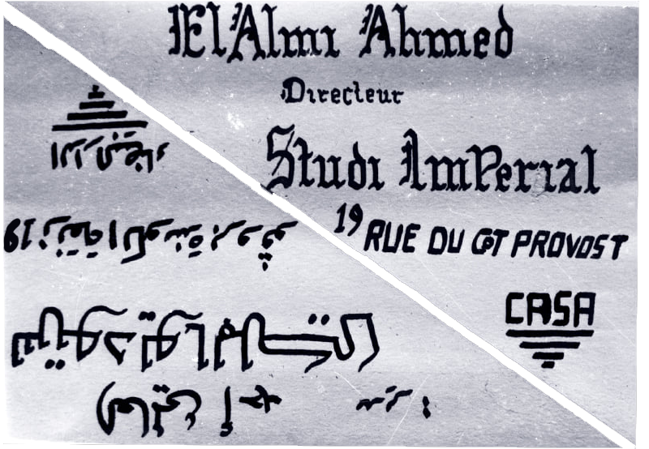

or تخزين,
is a research and publishing project on archives of political publishing practices in the context of Morocco.
as in ?
as in ?
archiving, collecting, accumulating, piling, storing, saving, memorizing...
ta[kh]zine researches the history and presence of publishing and its entanglement in socio-political and cultural sphere in Morocco, in order to use it as a tool for creating, translating and collecting knowledge.
The project came about from the question of why almost all the political revolutions and protests that happened in Morocco were never followed suit or paralleled with a visual/graphic design support compared to other MENA countries, or, looking back now, why they were obscured. This prompted a research on political image-making and publishing that took place in the country. The first diggings were mainly focused on literary and cultural magazine publishing.
In 1966, a group of avant-garde Moroccan poets, led by Abdellatif Laâbi, had launched the quarterly Souffles (literally, breaths; figuratively, spirits) as a literary journal. The early issues of Souffles published experimental poetry, essays on Moroccan literature and art, but the publication gradually turned into a venue for anti-colonial thought and Third Word solidarity. In 1968, the publication became more politically militant, expanded its readership, and launched an Arabic version (Anfas) in 1971. Between 1966 and 1973, Souffles/Anfas published a stunning array of texts – tracts, opens letters, interviews, abstract art, essays on Brazilian cinema novo, the Palestinian struggle, Russian futurism and the Black Power movement, speeches by anti-colonial leaders like Amical Cabral, poetry by Syrian bard Adonis, and the proceedings of Pan-African festivals and anti-colonial conferences.
ta[kh]zine is a tool to work on the construction of memory.
ta[kh]zine lives when it is used, but it is only valid when the material it holds reaches the public space – an idea grounded in a desire to encourage public access to information, an access that frees the past from the dominion of memories built by those who have either political, economic, or social power.
ta[kh]zine hopes to be used to think and investigate memory and history in its different dimensions and overlaps.
[kh] (خ) is a posterior sound as it happens in the back of the mouth. If we take a look at the history of political publishing in Morocco, a lot of it happened in the underground, in the back of things.
ta[kh]zine researches the history and presence of publishing and its entanglement in socio-political and cultural sphere in Morocco, in order to use it as a tool for creating, translating and collecting knowledge.
The project came about from the question of why almost all the political revolutions and protests that happened in Morocco were never followed suit or paralleled with a visual/graphic design support compared to other MENA countries, or, looking back now, why they were obscured. This prompted a research on political image-making and publishing that took place in the country. The first diggings were mainly focused on literary and cultural magazine publishing.
In 1966, a group of avant-garde Moroccan poets, led by Abdellatif Laâbi, had launched the quarterly Souffles (literally, breaths; figuratively, spirits) as a literary journal. The early issues of Souffles published experimental poetry, essays on Moroccan literature and art, but the publication gradually turned into a venue for anti-colonial thought and Third Word solidarity. In 1968, the publication became more politically militant, expanded its readership, and launched an Arabic version (Anfas) in 1971. Between 1966 and 1973, Souffles/Anfas published a stunning array of texts – tracts, opens letters, interviews, abstract art, essays on Brazilian cinema novo, the Palestinian struggle, Russian futurism and the Black Power movement, speeches by anti-colonial leaders like Amical Cabral, poetry by Syrian bard Adonis, and the proceedings of Pan-African festivals and anti-colonial conferences.
ta[kh]zine is a tool to work on the construction of memory.
ta[kh]zine lives when it is used, but it is only valid when the material it holds reaches the public space – an idea grounded in a desire to encourage public access to information, an access that frees the past from the dominion of memories built by those who have either political, economic, or social power.
ta[kh]zine hopes to be used to think and investigate memory and history in its different dimensions and overlaps.
[kh] (خ) is a posterior sound as it happens in the back of the mouth. If we take a look at the history of political publishing in Morocco, a lot of it happened in the underground, in the back of things.
A
Archiving
Archiving
In Crossing the Seventh Gate ("عبور الباب السابع")
by Ali Essafi, Moroccan filmmaker
Ahmed Bouanani said:
"For them, archives should not exist. There doesn't have to be
a memory. They were afraid,
all the time, of memory."

Before the Dying of the Light,
Ali Essafi, 2020
type:
ID Photo
ID Photo
location:
Morocco
Morocco
author:
Ali Essafi
Ali Essafi
year:
unknown
unknown
source:
Feature documentary
Feature documentary
Accumulating
B
C
Collecting
Collecting
The collection of photos of photographer Ahmad Al Almi is the tangible, but fragile, palimpsest
of a bustling history, carried by Arab, Jewish, Amazigh, French and European artists
linked to colonial times, but also to the crazy dreams of
independence and the taste for restored dignity.

Studio Imperial, Ahmad Al Almi,
Unknown
type:
Business card
Business card
location:
Morocco
Morocco
author:
Ahmad Al Almi
Ahmad Al Almi
year:
unknown
unknown
source:
Abdelmajid Arrif
Abdelmajid Arrif